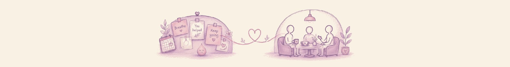

CommunityTwo gentle spaces that sit alongside the therapy and supervision work: one for anonymous notes on what has helped people through hard times, and one for gathering with fellow mental health professionals over a conversation.
A gentle, casual space for therapists, psychologists, and mental health professionals to connect with me one to one.
Therapists, psychologists, and mental health professionals with at least 2 years of experience.
A 40-minute video call, one to one. No agenda beyond a real conversation.
Sharing stories, exploring possibilities for collaboration or referrals, or simply a meaningful conversation, person to person.
My intention is to get to know your work, share mine, and create a space where we can uplift each other. Over time, I hope this grows into a thoughtful, non-isolating community for us in the mental health field, and that we get to know each other outside of our professional identities.
A note on fit: this space is not meant for existing, previous, or potential therapy clients or supervisees. If we are already working together in either of those ways, our sessions remain the space for that.
For Sip and Swap Stories, send a message with your LinkedIn profile and I will share my calendar. For anything else here, you are welcome to just reach out.